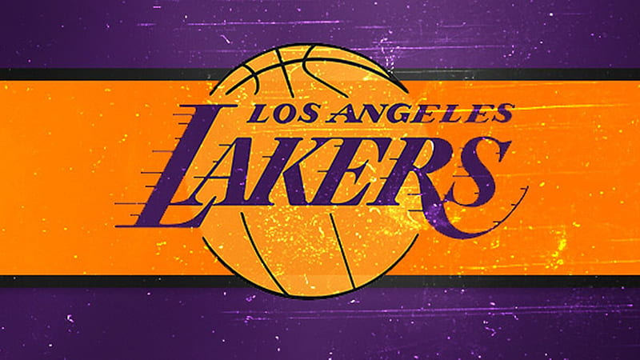

About Me
I am Youness Zerouali, currently pursuing my secondary education at Aboulkhayr High in Oke Center. Standing at 167cm tall and weighing 60kg, I proudly call Berkane, Morocco, my home. I have a profound love for sports, particularly basketball and football. On the court, I find immense joy in dribbling the ball and working collaboratively with my teammates. Likewise, on the football field, my passion for the game fuels my agility and skill as I maneuver the ball with precision. Beyond my athletic pursuits, I am deeply committed to my academic journey. I approach my studies with unwavering dedication, aiming to excel in my secondary education and broaden my knowledge base. I believe I embody a harmonious blend of athleticism, academic ambition, and a strong connection to my Moroccan heritage. My determination and enthusiasm fuel my character and aspirations for a promising future.
Experience
Studies
1bac SM
My favourite subjects are French-Mathematics-Physics
Social experiences
Every year we have a 2 season activity called bake and sale on which we prepare meals at home to sell it in school and the profit goes to certain school or village that needs help you can find my participation certificates at "Certificates-diplomat"+ some creative activities such as theatre,presentations,motivationnal speeches, creating poster;websites;presentations;poemes...and some time also crafting
Certificates and Diplomas
School Certificates
2019
certificate-link2020
2021
certificate-link(2)2022
certificate-link(3)2023
certificate-link(4)Hobbies
- football
- basketball
- Poeme writting
Football, particularly the mesmerizing world of Real Madrid, has been an integral part of my life for the past decade. The passion ignited by this beautiful game resonates deeply within me, and my heart beats to the rhythm of each match. For ten years, I've dedicated myself to both playing and avidly watching Real Madrid games, immersing myself in the club's history, victories, and the relentless pursuit of excellence. Amidst the array of remarkable players, one figure has stood out distinctly for me—Luka Modric. His artistry on the field, impeccable vision, and unparalleled skill have captivated my admiration. I consider him not just a footballer but the epitome of brilliance, grace, and determination. Luka Modric, in my eyes, stands as the pinnacle of footballing excellence, and his style of play has left an indelible mark, making him the best player I've ever had the privilege to witness. His talent serves as an inspiration, fueling my own passion for the game and igniting a relentless pursuit of greatness both on and off the field.
Idol:Luka Modriç

Fav team:Real Madrid
Basketball has been an inseparable part of my life for the past six years, and my dedication to the sport has been deeply intertwined with my admiration for the illustrious LA Lakers. Watching the Lakers dominate the court has been an exhilarating journey, where each game is a testament to teamwork, resilience, and the pursuit of victory. Amidst the legendary players that have graced the Lakers' roster, one towering figure stands above the rest in my eyes—Kobe Bryant. To me, Kobe is more than just a basketball icon; he embodies the very essence of greatness. His unmatched work ethic, unparalleled skill set, and an unyielding competitive spirit make him, without a doubt, the Greatest of All Time (GOAT). His dedication to the game and his ability to rise to any challenge serve as a perpetual source of inspiration for me. Kobe Bryant's legacy transcends basketball, impacting lives and instilling the value of relentless pursuit and unwavering determination. He remains an eternal beacon of excellence and serves as the epitome of what it means to strive for greatness, influencing my own passion for the sport and shaping my approach to life both on and off the basketball court.

The GOAT kobe Bryant
Lakers Los Angeles
My passion for writing poems is an intimate connection that transcends words. It's a heartfelt dialogue where emotions find their voice through rhythmic verses. Each poem is a canvas where I weave emotions, from the serene whispers of nature to the storms of human experience. It's a vulnerable yet beautiful act, immersing myself in the labyrinth of feelings, orchestrating a symphony that resonates with readers' hearts. Poetry is my sanctuary—a means to immortalize fleeting moments and explore the boundless realms of language and emotions, crafting timeless treasures with each penned verse.
Example
In whispers of dawn, dreams take flight,
Stars paint the canvas of the night.
A melody in every breeze that blows,
Life's poetry in nature's repose.
Sunsets blush, the sky aglow,
Moments cherished in their afterglow.
With each heartbeat, a story told,
In every silence, a tale unfolds.
Embrace the now, let time suspend,
For in each moment, beauty blends.
In life's mosaic, colors swirl and gleam,
A fleeting poem, a transient dream.
Socials & Contact
Facebook
MailBox
Instagram